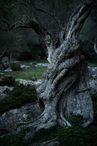

My name is Melanie Halem. I am passionate about the environment and communications, and I want to use my expertise to find and forward climate solutions. I love creating and consuming art, whether it be paintings, drawing, writing, or poetry. I just returned home to the United States after living in Madrid, Spain for the last two years, where I taught Spanish elementary students. I am about to move to San Francisco, California, where I plan to begin my career in communications.
I hope to find a career that marries my interests in communications, the environment, and politics. I would love to work on a communications or research team to get a piece of environmental legislation passed in the United States. I want to become an expert in greenhouse gas emissions, using my background in mathematics to aid in sound policy creation.
I am also very interested in art. I believe that art can be used to inspire change, and I want to use art in communications strategies. I also hope that at some point in my life, I am paid to make one piece of art.
